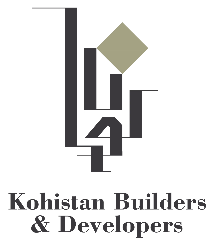
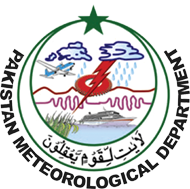

Professional Journey

GIS Developer
Map digitization, web map publishing (Leaflet), high-quality cartographic outputs for master planning, collaboration with Land & Legal teams, reporting to CEO.
GIS Developer
Geospatial data analysis, thematic maps for construction planning, GIS data workflows, spatial data infrastructure.
GIS Associate
Spatial databases, GPS field data collection, aerial image interpretation, GIS layer management.

GIS Internee
Drought analysis (Thar District) with NDVI/SIF, Google Earth Engine, land use classification, multi-layer GIS operations.